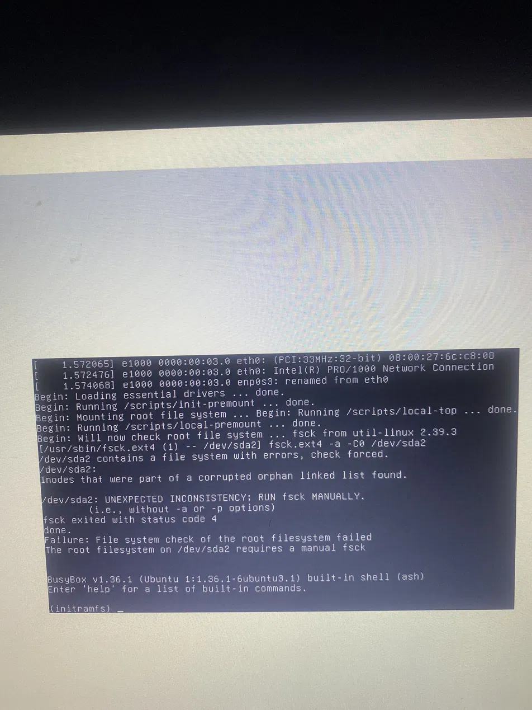
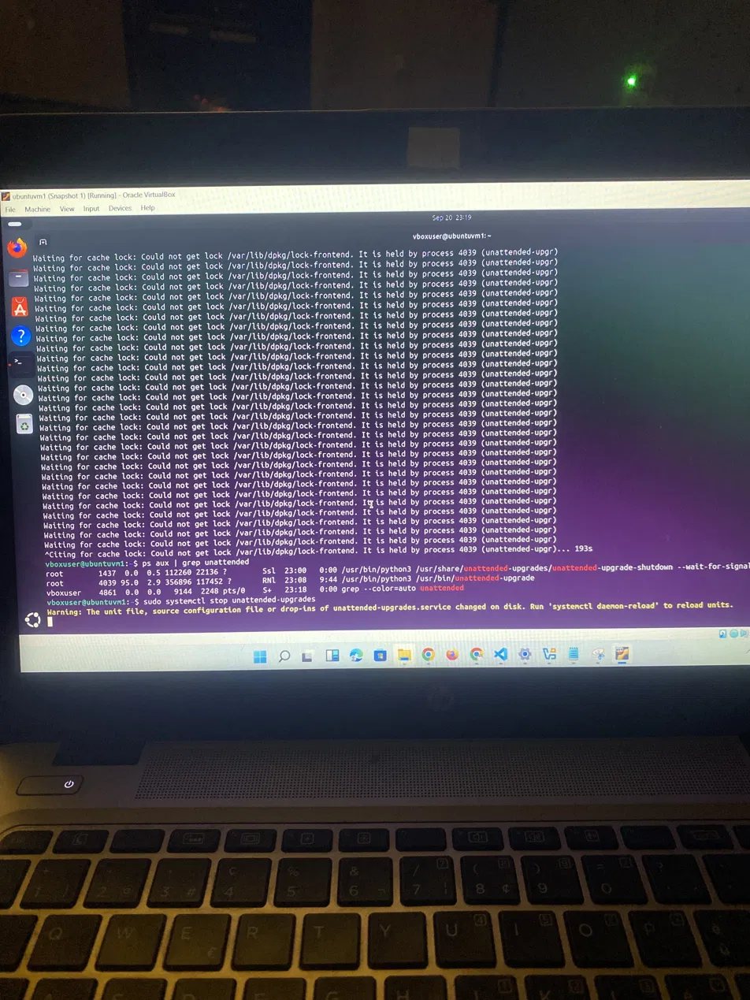

Summary
While building a File Integrity Monitoring proof-of-concept on a local Ubuntu Server VM, I hit four separate, real infrastructure incidents in the span of a few days: a memory-exhaustion crash, a corrupted filesystem, a blocked package install, and a broken service-to-service trust relationship. None of these were caused by a bug in code I wrote — they were the kind of operational issues that show up constantly in real IT and systems administration work. This case file documents each one: the symptom, the (sometimes wrong) first instinct, the actual diagnosis, and the fix.
Incident 1: Memory exhaustion crashes the desktop
Symptom: after installing Kibana alongside Elasticsearch, the VM became extremely slow. The desktop environment stopped responding, and the browser could no longer be opened at all.
First instinct (wrong): assume the VM just needed more total memory, and increase it from 4GB to 6GB.
What actually happened: Elasticsearch automatically allocates roughly half of all available system memory to its own internal heap by default. Increasing the VM's total memory didn't fix the crash — it just gave Elasticsearch a bigger number to take half of, leaving the desktop environment with the same proportion of memory starved as before.
free -h sudo systemctl stop kibana sudo systemctl stop elasticsearch
Fix: cap Elasticsearch's heap to a fixed size instead of letting it scale with available memory:
sudo mkdir -p /etc/elasticsearch/jvm.options.d sudo nano /etc/elasticsearch/jvm.options.d/heap.options -Xms1g -Xmx1g
Incident 2: Filesystem corruption from forced restarts
Symptom: after force-resetting the frozen VM (twice, via VirtualBox's Reset option) to recover from the memory crash above, the next boot dropped into a BusyBox recovery shell instead of loading normally.
/dev/sda2 contains a file system with errors, check forced. /dev/sda2: Inodes that were part of a corrupted orphan linked list found. /dev/sda2: UNEXPECTED INCONSISTENCY; RUN fsck MANUALLY. fsck exited with status code 4 Failure: File system check of the root filesystem failed (initramfs) _

What actually happened: force-resetting a machine while it's mid-write to disk (which is likely during a memory-pressure crisis, when the system is swapping heavily) can corrupt the filesystem's internal bookkeeping, not just lose unsaved application state.
Fix: run a manual filesystem check and repair from the recovery shell, twice — once to fix the major inconsistencies, once to confirm a clean pass:
(initramfs) fsck -y /dev/sda2 (initramfs) fsck -y /dev/sda2 (initramfs) reboot -f
Incident 3: A package install blocked by a background process
Symptom: attempting to install Kibana returned a repeating lock error instead of installing:
Waiting for cache lock: Could not get lock /var/lib/dpkg/lock-frontend. It is held by process 4039 (unattended-upgr)
First instinct (wrong): assume something was broken and consider force-killing the process blocking it.
What actually happened: Ubuntu's own background automatic security updates (unattended-upgrades) were actively running and legitimately holding the package manager's lock — confirmed by checking the process's live CPU usage rather than assuming it was stuck:
ps aux | grep unattended root 4039 95.0 2.9 356896 117452 ? RNl 9:44 /usr/bin/python3 /usr/bin/unattended-upgrade

Fix: let the in-progress update finish rather than killing it mid-write (which risks corrupting the package database), then disable the recurring timers that trigger it to avoid the same conflict later:
sudo systemctl stop apt-daily.timer apt-daily-upgrade.timer sudo systemctl mask apt-daily.timer apt-daily-upgrade.timer
Incident 4: A broken trust chain between two services
Symptom: Kibana logged a connection error and would not load, despite both Elasticsearch and Kibana individually reporting as running:
[ERROR][elasticsearch-service] Unable to retrieve version information from Elasticsearch nodes. self-signed certificate...
What actually happened: Elasticsearch secures its connections with a self-signed TLS certificate by default. Kibana strictly verifies that certificate before trusting the connection. After the environment was reconfigured during the earlier incidents, that trust relationship broke — both services were healthy in isolation, but no longer trusted each other.
Fix (appropriate for this lab environment):
sudo nano /etc/kibana/kibana.yml elasticsearch.ssl.verificationMode: none sudo systemctl restart kibana
The meta-lesson: a vague status doesn't name the cause
Partway through this, the system reported an overall degraded state. My first assumption was that it pointed to Elasticsearch, since that's what I'd just been working on. It didn't — a degraded systemd status is a system-wide flag meaning some unit somewhere failed, not a pointer to a specific one:
systemctl --failed
Running that command directly, instead of guessing, showed the actual failed unit. This became the throughline for every incident above: the fastest path to a fix was always the same three steps — reproduce the symptom, check the specific, relevant status (not just the general one), then act on what that actually shows.
Lessons learned
None of these four incidents were caused by a flaw in the FIM project itself — they were standard operational hazards of running real infrastructure, the same category of issue an IT support or systems role deals with constantly. The pattern across all of them: my first instinct was consistently to act (add more memory, force a restart, kill a process, disable a security check) before fully diagnosing, and in every case the correct fix was smaller and more targeted than the first instinct suggested. Diagnosing first — checking actual memory numbers, actual process activity, actual failed units — consistently cost less time than guessing did, even though it felt slower in the moment.